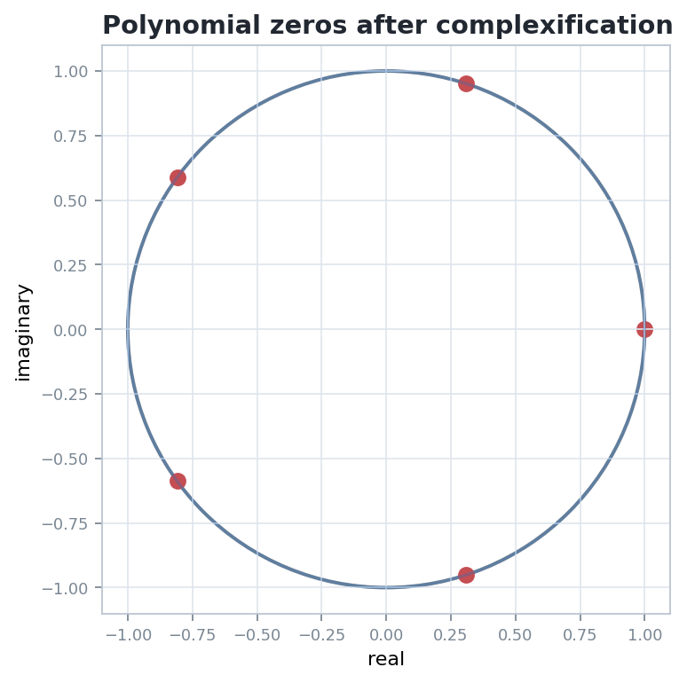
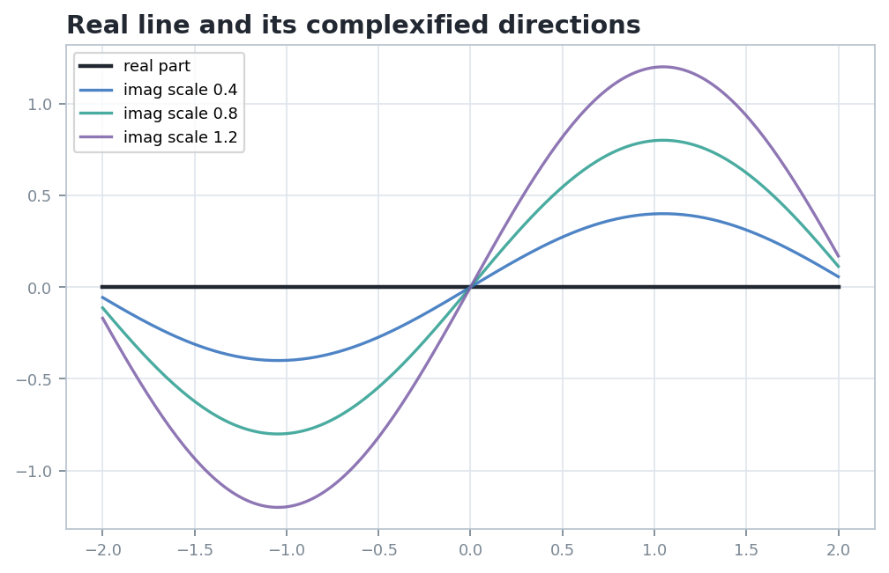

Complexification Adds Scalars Without Rebuilding the Geometry
A real vector, affine, or projective object gains complex coordinates; the lecture tracks which structures extend canonically and which points are genuinely new.
Scalars
Replace real coefficients by complex ones: $$V_{\mathbb C}=V\otimes_{\mathbb R}\mathbb C.$$
Structure
Linear maps, subspaces, and polynomial equations extend by the same formulas.
Inspection
Zeros, directions, and projective points can appear outside the original real locus.
Source grounding: printed 142-150, PDF 154-162. Notebook: D:/Geometry/Geometry-I/chapter-07-complexifications/07-complexifications.ipynb
Route Through the Chapter
Concept map
real vector space
->
complexified maps
->
equations and subspaces
->
affine/projective objects
Translation guide
The notebook focuses on five constructions: vector-space complexification, functoriality of morphisms, polynomial complexification, subspace extension, and affine/projective complexification.
Inspection habit
For every figure, ask what object is acted on, what operation is applied, and what relationship remains invariant.
Notebook storyboard: concept inventory and inspection target for Chapter 7.
If \(U=\{x:Ax=0\}\) over \(\mathbb R\), then \(U_{\mathbb C}=\{z:Az=0\}\) over \(\mathbb C\).
Common mistake
Do not complexify only the coordinates and forget the constraints. The equations must also be read over the new scalar field.
Source orientation: subspaces and complexifications.
Polynomials Gain Complex Zeros
Equations
Complexified polynomial
A real-coefficient polynomial is read with complex inputs and the same coefficients. The equation can acquire solutions not visible over the real line.
For the fifth roots of unity, all recorded moduli equal 1 up to max error \(1.11\times 10^{-16}\).

Artifact grounding: ../figures/complex-roots-on-unit-circle.png and checks/visual-summary.json.
Real Directions Acquire Imaginary Companions
Visual model

What to inspect
The black axis remains the real locus. The colored curves encode different imaginary scales, making visible that complexification adds directions transverse to the original real line.
Interpretation
A point \(x+iy\) should be read as a real part together with an independent imaginary component, not as a point that abandoned its real origin.
Projection caution
A two-dimensional drawing can display only a slice of the complexified object. The algebra tells which parts of the picture are structural.
Artifact grounding: ../figures/complexified-real-directions.png and final-sanity image statistics.
Affine Complexification Keeps Difference Vectors
Affine
Affine version
An affine space modeled on \(V\) complexifies to an affine space modeled on \(V_{\mathbb C}\). Differences of points are complexified; points still require an origin or chart to be written as coordinates.
Barycentric formulas continue to make sense when coefficients are complex, provided the weights still sum to 1.
Source orientation: affine complexification and coordinate discipline.
Projective Complexification Adds Lines Through the Complex Origin
Projective
$$\mathbb P(V_{\mathbb C})=\{ \text{complex lines in } V_{\mathbb C}\}$$
Real locus
A real projective point is a real line; after complexification it sits among all complex lines. Incidence relations are still expressed by linear dependence and equations.
Equivalence changes
Projective coordinates are identified by nonzero complex scaling, not only by nonzero real scaling.
Source orientation: affine and projective complexification.
Coordinates Are Auxiliary, Equations Carry the Object
Pitfall
Pitfall
Complex coordinates do not automatically identify the geometric object. A coordinate tuple is a representative, while the point or subspace is defined by its transformation rule and equations.
Good test
After changing charts or representatives, check formulas that are invariant: linear dependence, vanishing of homogeneous polynomials, incidence, and rank.
Setting
Representative
Invariant reading
Vector
\(v+iw\)
real and imaginary parts transform by the same real-linear rule
Subspace
\(Az=0\)
solution space of the complexified equations
Affine
\(p+\zeta\)
differences live in \(V_{\mathbb C}\)
Projective
\([z_0:\cdots:z_n]\)
unchanged under nonzero complex scaling
Notebook emphasis: coordinates are not points, drawings are not proofs, and checks must name the invariant.
The Notebook Certificate Makes the Visuals Auditable
Checks
Recorded invariant
The roots-of-unity lab records five root moduli and a maximum modulus error of \(1.11\times 10^{-16}\).
Image sanity
The two chapter figures have nonzero size and nonblank pixel variation, so later audits can detect missing or empty visuals.